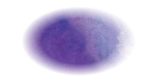
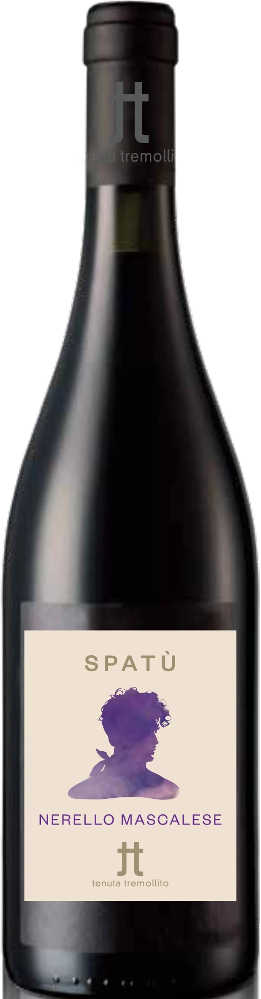

Tenuta Tremollito
SPATÙ
Nerello Mascalese · IGT Terre Siciliane
Named after Rocco Spatu, the night owl of Aci Trezza in Verga’s I Malavoglia. On the novel’s last page, as dawn comes, he is the first to begin his day.

Fact sheet: SPATÙ
Nerello Mascalese
Pale ruby. Spicy on the nose. Dry and savoury, with red fruit, a pleasant acidity and good length.
- Grape
- Nerello Mascalese
- Area
- Monte Altore, Vizzini (Catania)
- Altitude
- 500 to 600 m
- Soil
- Sandy and volcanic, rich in minerals, slightly acidic
- Climate
- Mountain and high hill, well ventilated, with wide swings between day and night
- Training
- Espalier
- Vine age
- 5 to 10 years
- Density
- About 5,500 vines per hectare
- Yield
- 7,000 kg/ha
- Harvest
- By hand in October, depending on the weather
- Winemaking
- Destemmed, crushed and fermented in steel at controlled temperature, with a 15-day maceration
- Ageing
- About 12 months in tonneaux, then about 6 months in bottle
- Alcohol
- 14%
- Serve at
- 18°C
IGT Terre Siciliane
E-label · Ingredients and nutrition
The information required on the bottle under EU Regulation 2021/2117. No marketing on this part of the page.
| Ingredients | To come from the oenologist |
|---|---|
| Allergens | To come (contains sulphites) |
| Energy per 100 ml | — kJ / — kcal |
| Carbohydrates per 100 ml | — g, of which sugars — g |
| Alcohol | 14% |
| Packaging and recycling | To come |